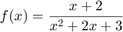
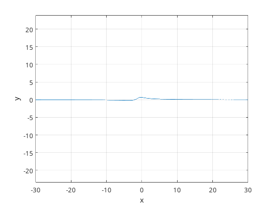
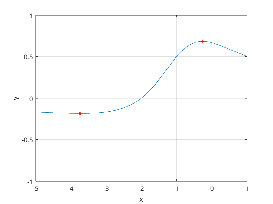
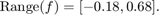

Värdemängd för funktionen

Om vi tar x-värden mellan -30 och 30 kan vi se hur funktionen beter sig
x = linspace(-30, 30, 6000); y = (x + 2) ./ (x.^2 + 2 * x + 3); figure; plot(x, y) xlabel('x') ylabel('y') grid on axis equal;
Sedan för att hitta värdemängden kan vi minska x- och y-axeln
figure; plot(x, y) hold on; xlabel('x') ylabel('y') grid on axis([-5 1, -1 1]); x_hl = [-0.265044, -3.73562]; y_hl = [0.68301, -0.183012]; plot(x_hl, y_hl, 'ro', 'MarkerSize', 3, 'MarkerFaceColor', 'r'); hold off;
Indikerat med röda prickar fick jag alltså
vilket ger
